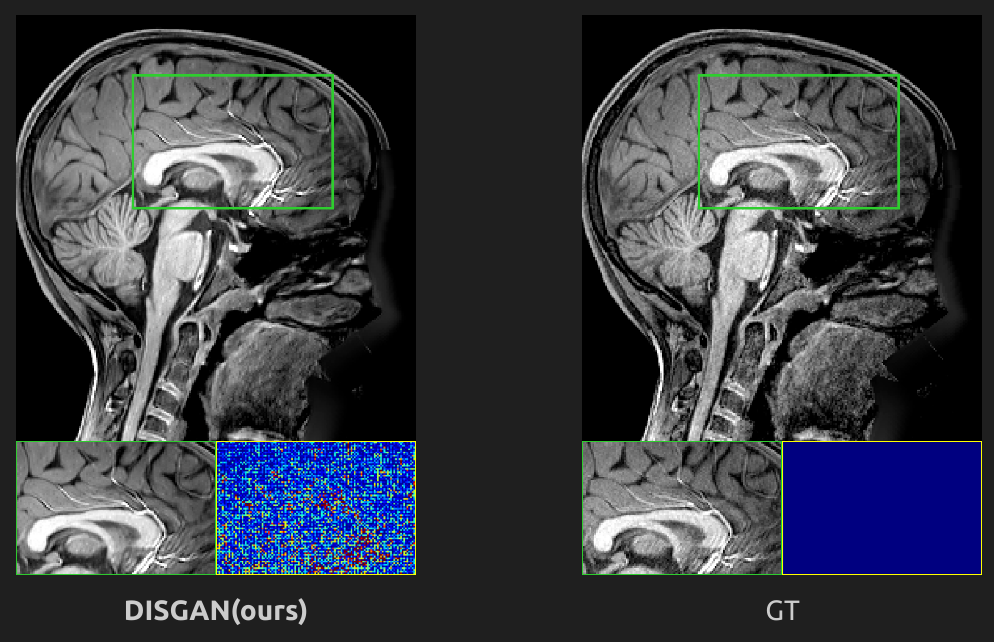

Posted on Oct. 1, 2023 — Exploring how GANs can denoise and super-resolve MRI images.
Blogs
-

Understanding GANs in Medical Imaging -
 Efficient Flow-based Models Explained
Efficient Flow-based Models ExplainedPosted on Sept 10, 2023 — A breakdown of flow-based generative models and why they matter.